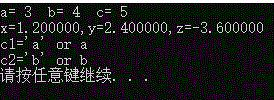

#include<stdio.h>
#include<stdlib.h>
int main()
{
int a = 3, b = 4, c = 5, u = 51274, n = 128765;
double x = 1.2, y = 2.4, z = -3.6;
char c1 = 'a',c2='b';
printf("a= %d b= %d c= %d\n",a,b,c);
printf("x=%f,y=%f,z=%f\n", x, y,z);
printf("c1='%c' or %c\n",c1,97);
printf("c2='%c' or %c\n",c2,98);
system("pause");
return 0;
}
结果
